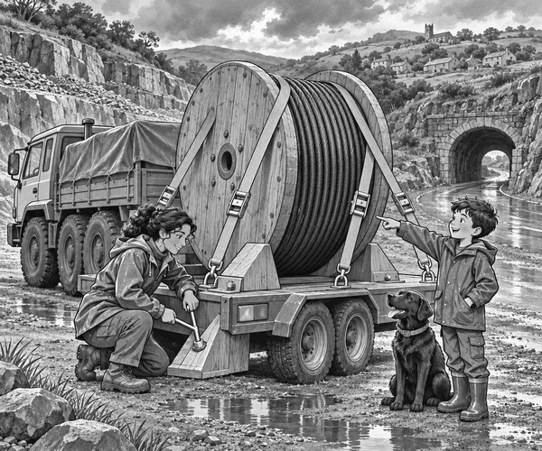

A storm had struck Thunder Hill.
The power cable to the hill village had snapped.
The homes were dark.
The rescue radio had only one battery left.
Mia brought her six-wheel truck to the cable yard.
A giant wooden drum waited beside the crane.
Thick black cable was wound around it.
Tom stared up at the load.
“It is as tall as the truck!” he said.
Scout gave it a careful sniff.
The crane lowered the drum onto a low trailer.
Mia placed strong wooden chocks against it.
The chocks were shaped like wedges.
They stopped the round drum from rolling.
Four heavy straps held it down.
Tom checked each buckle with Mia.
Then the truck set off.
Rumble. Rattle. Roll.
The quarry road climbed beside a rocky stream.
Rain had filled the deep wheel tracks.
Mia selected a low gear.
The truck crawled through the muddy water.
Its six driven wheels turned slowly.
The drum stayed low and steady.
Then Scout sat up.
Clunk!
Something had moved on the trailer.
Mia stopped on firm, level ground.
One wooden chock had shifted by a finger's width.
Tom fetched the wheel brace.
Mia tightened the chock bolt.
They checked all four straps again.
Now the load could not move.
Ahead stood the old quarry tunnel.
Water covered its floor.
A height bar hung above the entrance.
Tom held up the measuring pole.
The drum would fit beneath the bar.
But there was only a small gap.
Mia drove at walking speed.
Tom watched from the safe path beside the tunnel.
Scout waited with him.
The truck rolled under the stone roof.
The top of the drum passed below it.
Drip. Rumble. Drip.
At last, daylight shone ahead.
The truck climbed out beside Thunder Hill village.
The repair team cheered.
A small crane lifted the drum from the trailer.
Workers pulled the new cable along the road.
Soon the village lights blinked on.
The rescue radio began to hum.
Scout barked at every glowing window.
Cargo fact: Round loads can roll with great force. Wedge-shaped chocks and strong straps keep cable drums safely in place.
Trailer fact: A low trailer keeps a tall, heavy load closer to the ground. This helps the vehicle stay steady.
Tom patted the giant drum.
It had arrived without rolling an inch.
Thunder Hill had power again.